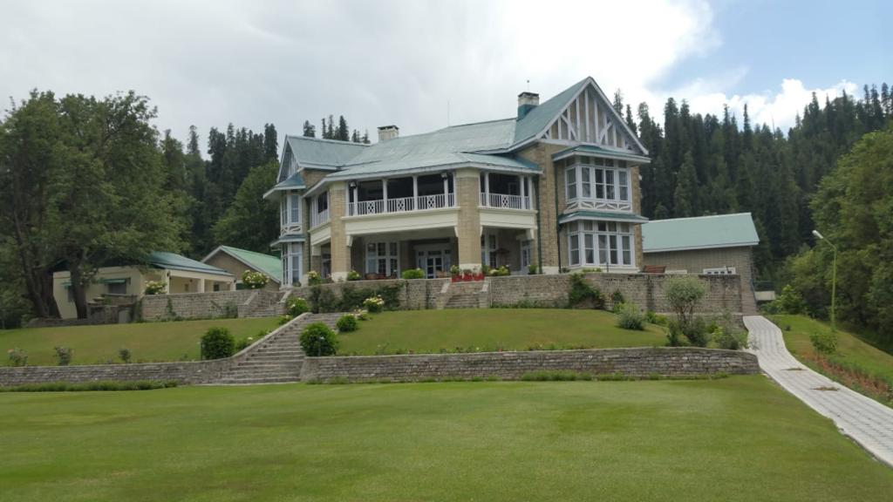

GovernerHouse (Nathiagali)
Governor's House in Nathiagali, Khyber Pakhtunkhwa (KPK), i spent one week there well-furnished it can be a fascinating way to explore the historical, architectural, and natural beauty of the region.
Governor's House in Nathiagali, Khyber Pakhtunkhwa (KPK), i spent one week there well-furnished it can be a fascinating way to explore the historical, architectural, and natural beauty of the region.
Geographical location of Naran and Kaghan in the Kaghan Valley, situated in the Mansehra District of Khyber Pakhtunkhwa, Pakistan.Naran and Kaghan are beautiful tourist destinations in Pakistan, known for their stunning natural landscapes and vibrant culture
Passu is located along the Hunza River, Hunza Valley as a lesser-known tourist destination, with a focus on its serene landscapes and rich culture.